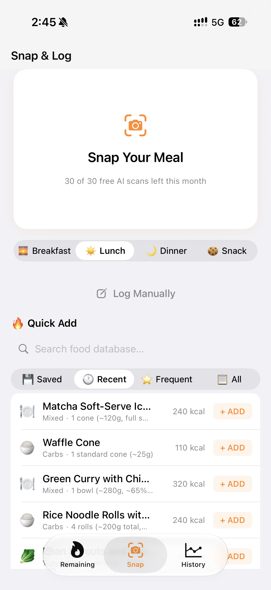
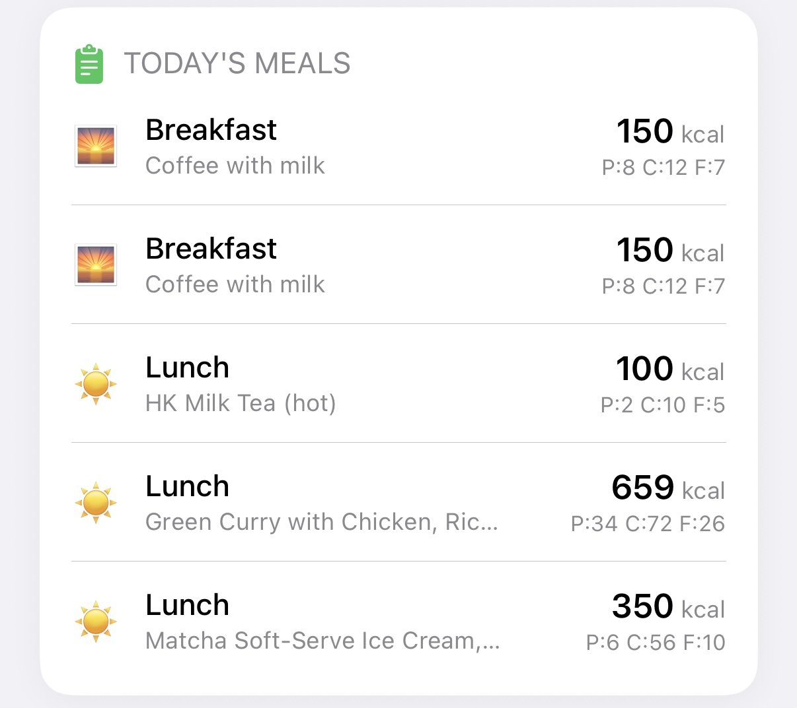
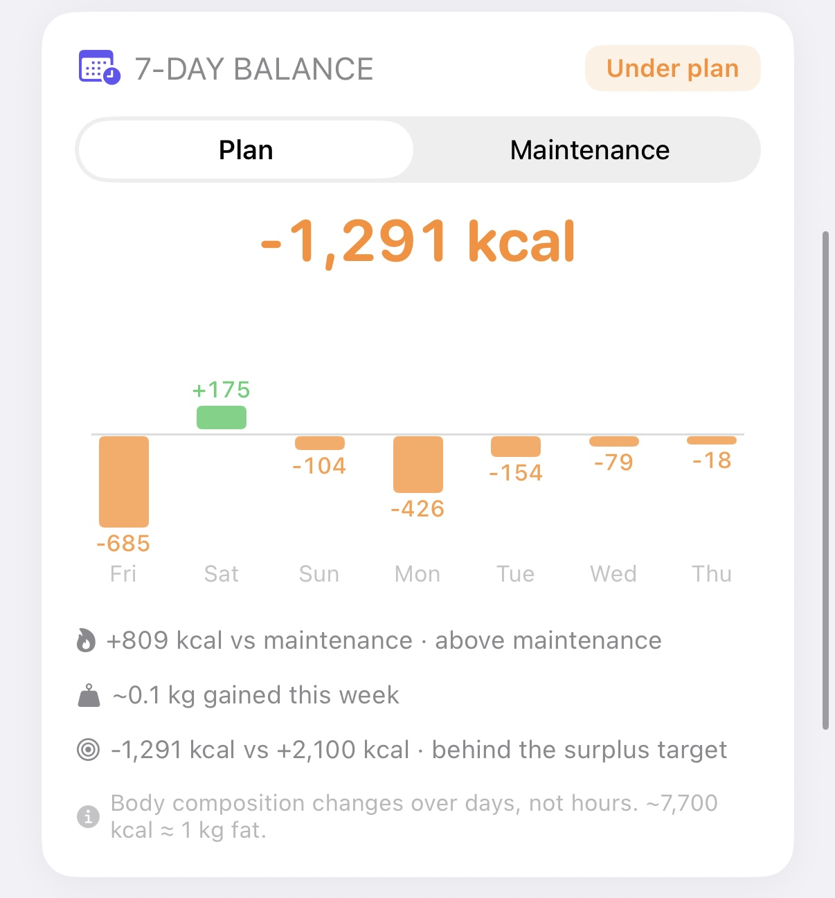

Photo in.
Macros out.
GainCut is an AI calorie tracker for people who actually train. Photograph your plate and it works out the protein, carbs and fat — then logs it against a target that matches your phase.
30 free AI scans every month · No card required · iOS 17+


You are exact in the gym
and guessing in the kitchen.
You track your lifts to the kilo and your sets to the rep. Then you eat without knowing whether you hit 120 g of protein or 60. That is not a discipline problem. It is a measurement problem — and no amount of willpower fixes a number you never measured.
Most trackers fail on the food you actually eat.
Western-first food databases have never seen char siu, a bowl of wonton noodles or a plate of dim sum. So you either guess, or you search for twenty minutes and give up by Thursday.
GainCut was built in Hong Kong. It reads the plate in front of you instead of asking you to pick from a list that does not contain it.
- Recognises local dishes, not just barcoded imports
- Portion sizes from the photo, not from a scale
- One entry per meal — under ten seconds

Three steps. Roughly ten seconds.
The point of a food tracker is that you keep using it. Every step here exists to remove a reason to stop.
Snap the plate
Open the camera and photograph your meal. No barcode, no search box, no typing a brand name.
It reads the food
The model identifies the dish and estimates the portion, then breaks it into protein, carbohydrate and fat.
It logs against your target
The meal counts against a calorie budget built from your measured burn and your current phase — bulk, cut or maintain.
Your target is arithmetic, not a guess.
GainCut starts from your basal metabolic rate, adds the calories your activity actually burns, and then applies your phase. A surplus for a bulk. A deficit for a cut. Nothing for maintenance.
Every target is shown with its working, so you can see exactly where the number came from — and challenge it if you disagree.

What it tracks, and why each one matters.
Macros with a reason attached.
Calories alone cannot tell you whether you are losing fat or muscle. GainCut splits every meal into the three macros and labels what each one is for.
- Protein — muscle retained and built
- Carbs — training energy
- Fat — hormone regulation

A surplus only builds muscle if you recover.
Eat more while you sleep six hours and much of that surplus is stored as fat. GainCut folds your heart-rate variability, resting heart rate and sleep into one readiness signal, so you know whether today is a lift day or a rest day.
It reads from Apple Health, so any device that writes there works. No extra hardware, no second subscription.

One day tells you nothing. Seven tells you the truth.
A single bad Tuesday feels like failure and means nothing. GainCut shows the rolling seven-day balance across every day, so you can see whether the week actually went the way you intended.
You can read it two ways: against your plan, and against maintenance. On plan or off, you get the real number rather than a reassuring one.

Snap, log, move on.
The whole interaction is one photo and one confirmation. If the model reads the portion wrong, you correct it — you always get the final say before anything is saved.
Your scan allowance is shown up front, so there is no surprise paywall in the middle of a meal.
What GainCut does not do.
An estimate from a photograph is an estimate. Here is the boundary, stated plainly, so you know what you are buying.
| Photo scans are estimates | Portion size from a photo carries an error margin. GainCut is built to be close enough to act on, not to replace a laboratory scale. |
|---|---|
| You correct it, not the model | Every result can be edited before it is saved. The app never silently overwrites your judgement. |
| No calorie is a measurement of you | Targets derive from formulas and your logged activity. They are a starting point to adjust from, not a medical prescription. |
| iPhone only, iOS 17 or later | There is no Android build. The recovery score needs Apple Health data to be useful. |
| Not a medical device | GainCut does not diagnose, treat or manage any condition. If you have a clinical need, speak to a professional. |
Free is genuinely usable.
Thirty AI scans a month is roughly one meal a day. If that is all you need, you never have to pay.
No card, no trial expiry
- 30 AI food scans per month
- Full macro breakdown
- Phase-aware calorie targets
- Recovery score from Apple Health
- 7-Day Balance
Or US$14.99/year — save up to 45%. 3-day free trial on the yearly plan. App Store shows the price in your local currency.
- Unlimited AI food scans
- Everything in the free tier
- Priority on new features
- Cancel any time in iOS Settings
Payment is handled by Apple. Cancel any time from your App Store subscription settings.
Questions worth asking.
Is GainCut free?
Yes. The free tier includes 30 AI food scans every month and does not expire. Pro removes the monthly scan limit: US$1.99/month or US$14.99/year (save up to 45%), with a 3-day free trial on the yearly plan. The App Store charges in your local currency.
Does it work with Hong Kong food?
It was built here, so it reads local dishes — char siu, rice, noodles, dim sum, Hong Kong milk tea — instead of failing on them the way Western-first databases do.
Do I need an Apple Watch or a Whoop?
No. The recovery score reads HRV, resting heart rate and sleep from Apple Health. Any device that writes to Apple Health works, including a phone alone for some metrics.
What happens if the AI gets my meal wrong?
You edit it before it saves. Every scan result is presented for confirmation, so a wrong read costs you one correction rather than a day of bad data. Nothing is saved without your say-so.
Is my health data private?
Nutrition and health data stays on your device and in Apple Health. Meal photos are sent to the food-recognition service to identify the dish; they are not used to build an advertising profile and are not sold.
Full detail is in the privacy policy.
Which devices does it run on?
iPhone, iOS 17.0 or later. There is no Android version.
Who builds GainCut?
IdeaFactory — a father-and-son product studio in Hong Kong. It is an app built by people who train, for people who train. Support is at support@ideafactory.one, or see the support page.
Stop guessing the kitchen.
Thirty free scans a month. One photo per meal. Find out what you have actually been eating.
Also from the studio
PawMind reads dog body language. SpeakAble rebuilds speech with AI. KidLaunch tracks what your kids actually learn.